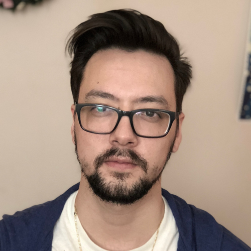

About Me
Hey there! My name is Stéphane, and welcome to my portfolio. This is my first dive into coding, and excited to be jumping into web development through this Full Stack program. My previous experience as Broadcaster and Senior Content Producer for the Aetherium Gaming partnership revolved around the planning, production, and broadcasting of digital content in the video gaming and entertainment industry, which enhanced my ability to analyze audience retention data and viewer trends to produce targeted material. I was responsible for creating and cultivating an audience of over 2,200 unique viewers around the broadcast show, and establishing and developing professional relationships with developers, brands, and other creators, and boosting community engagement.
Working as a broadcaster allowed me to become proficient with OBS, XSplit, and other essential programs for online broadcasting and content creation, and gave me a certain familiarity with troubleshooting consumer hardware and software used to produce and operate a live broadcast. Additionally, my limited experience with graphic design, in an amateur/hobbyist capacity, gave me a basis for branding and social media marketing. Hopefully, the knowledge & skills I've acquired over the years will translate well to the material and disciplines covered throughout this program and beyond, allowing me to combine my lifelong passion for gaming and digital content with my new interest in modern web development. I'm excited for for the opportunity to incorporate the two into a lucrative and fulfilling career in the technology and/or entertainment industries.
– Stéphane Genini